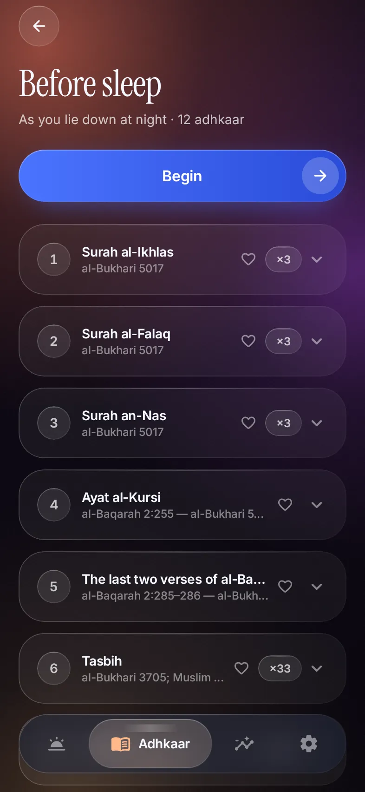

Before sleep
10:00PM
End the day
with dhikr,
not the feed.
At bedtime the adhkaar before sleep open by themselves. Choose Lockdown, and the late-night scroll waits until you've read them.

Free for AndroidMorning and evening adhkaar, on time.